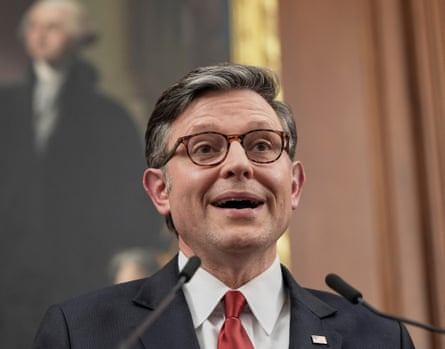

Volodymyr Zelenskyy is replacing Ukraine’s ambassador to the US, who has been heavily criticised by leading Republicans, as part a diplomatic reshuffle designed to strengthen ties with the Trump administration.
Ukraine’s foreign minister, Andrii Sybiha, confirmed on Wednesday that Oksana Markarova will be recalled from Washington after four years in the job. He described her as “extremely effective, charismatic and one of our most successful ambassadors”.
He indicated that several top ambassadors to G7 and G20 countries would also be moved, telling Ukrainian radio “Every diplomat has a rotation cycle”.
The diplomatic shake-up comes at a critical moment in the war. Russian troops have been attacking across the 600-mile frontline and in recent weeks the speed of their gains has increased, with the Kremlin spokesperson declaring: “We are advancing.”
Russian combat units are for the first time close to crossing into Dnipropetrovsk oblast.
Late on Tuesday and early on Wednesday, Russia carried out its biggest aerial attack since the start of its full-scale invasion in February 2022. It involved a record 728 Shahed-type drones, as well as 13 cruise and ballistic missiles. Most were shot down.
The US House of Representatives speaker, Mike Johnson, is among the Republican figures who have criticised Markarova , accusing her of supporting the Democratic party and its candidate Kamala Harris in the run-up to last November’s presidential election.
Mike Johnson, US speaker of the House, is among the senior politicians who have criticised the ambassador.Photograph: Mariam Zuhaib/AP
In February she was pictured with her head in her hand during Volodymyr Zelenskyy’s disastrous meeting with Donald Trump in the Oval Office.
There were calls for her dismissal after Zelenskyy visited a shell factory in Pennsylvania last September. Markarova organised the visit and did not invite a single Republican, Johnson said at the time.
Ukrainian officials deny any bias but acknowledge the ambassador previously had good relations with the Biden administration and was close to Victoria Nuland, the then undersecretary of state for political affairs.
Zelenskyy and Trump discussed Markarova’s departure during a phone call last Friday which Ukraine’s president hailed as their most constructive to date.
On Tuesday, Trump expressed growing frustration with Vladimir Putin and announced US weapons deliveries to Kyiv would be restarted. His announcement followed a week-long pause, apparently ordered by Pete Hegseth, the US secretary of defense.
The shipment includes Patriot interceptor missiles and other precision munitions. It is unclear how many will be transferred. The US news website Axios reported 10 missiles would be delivered – a tiny amount at a time when Moscow has dramatically escalated its bombardment of Ukrainian cities.
The overnight raid was directed at the northwestern city of Lutsk. At least six civilians were killed and 39 injured in several other regions of the country, including Kharkiv and Donetsk in the north-east and east, and Kherson and Zaporizhzhia in the south.
A one-year-old boy, Dmytro, died in the village of Pravdyne in Kherson oblast when the Russians hit his house with drones, the local administration reported. The boy had been staying with his great-grandmother.
One possible successor to Markarova in Washington is said to be Ihor Zhovkva, the deputy head of the office of Ukraine’s president. Zhovka’s immediate boss is Andriy Yermak, who is widely seen as the most influential person in Ukrainian politics after Zelenskyy.
Other names include the finance minister, Serhiy Marchenko, and Olha Stefanishyna, who is deputy prime minister for Europe and Euro-Atlantic integration, as well as minister of justice.
There is growing optimism in Kyiv that Trump’s pivot earlier this year towards Russia has been halted, if not quite reversed. One former Ukrainian official credited Jonathan Powell, the UK’s national security adviser and a veteran negotiator , with the transformation.
Powell has played an important role in repairing Zelenskyy’s fraught relations with Washington after the Oval Office bust-up.
He advised Ukraine’s government to avoid confronting the US president and to take his words as truth. The approach – described as “strategic patience” – was beginning to pay off, the official suggested.
Zelenskyy has agreed to US proposals for a 30-day ceasefire, repeatedly praised Trump’s leadership, and signed a deal giving American investors access to Ukraine’s valuable natural resources.
On Wednesday he met Pope Leo in Rome before a two-day international conference, organised to help Ukraine’s postwar recovery. Zelenskyy said they had discussed the return of Ukrainian children and civilians who had been abducted by Russia and the Vatican’s offer to facilitate peace negotiations.
Germany’s chancellor, Friedrich Merz, is due to attend the conference. In a recent call with Trump, Merz reportedly offered to buy Patriot anti-defence batteries from the US and to send them to Ukraine.
Trump’s Ukraine envoy, Keith Kellogg, is also due in Rome and is likely to hold talks on weapons deliveries with Rustem Umerov, Ukraine’s defence minister.